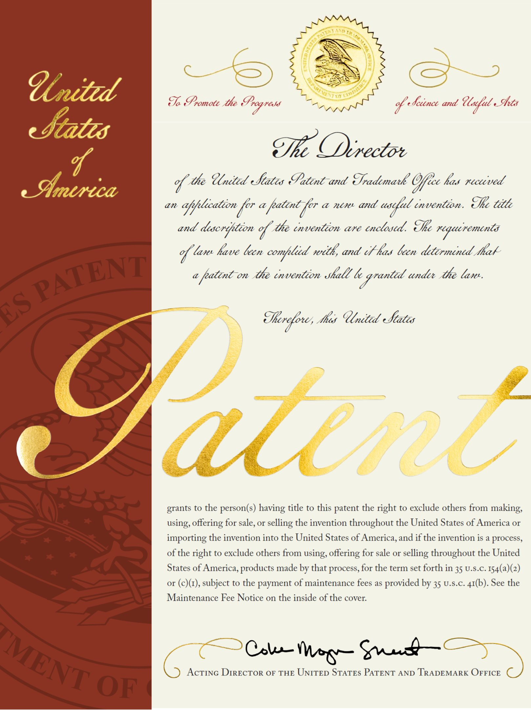
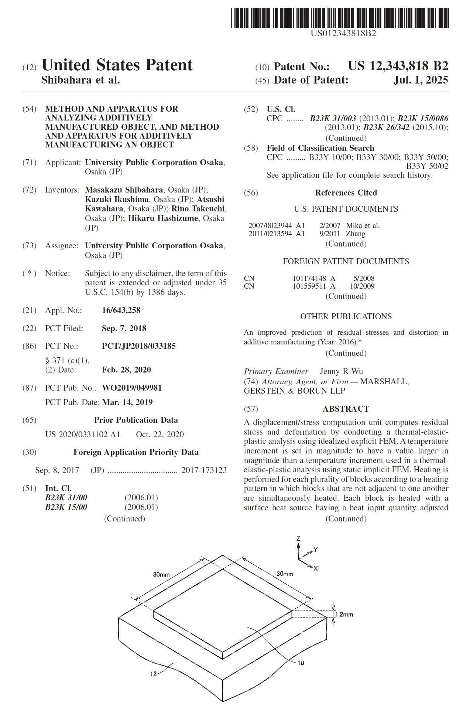

TOPICS
2025年9月6日
- 特許
特許：柴原正和 教授、生島一樹 准教授、河原充 特任研究員、竹内梨乃さん(現 三菱重工)、橋詰光さん(現 NEC)が「金属3D積層造形解析」 に関する 国際特許(アメリカ合衆国)を取得しました。
柴原正和 教授、生島一樹 准教授、河原充 特任研究員、竹内梨乃さん(現 三菱重工)、橋詰光さん(現 NEC)が「金属3D積層造形解析」 に関する 国際特許(アメリカ合衆国)を取得しました。
「METHODANDAPPARATUS FOR ANALYZING ADDITIVELY MANUFACTURED OBJECT, AND METHOD AND APPARATUS FORADDITIVELY MANUFACTURINGAN OBJECT」
Inventors:
Masakazu Shibahara, Kazuki Ikushima, Atsushi Kawahara, Rino Takeuchi, Hikaru Hashizume
Assignee: University Public Corporation Osaka
Appl. No.: 16/643,258
PCT Filed: Sep. 7, 2018
PCT No.: PCT/JP2018/033185
Date: Feb. 28, 2020
PCT Pub. No.: WO2019/049981
PCT Pub. Date: Mar. 14, 2019
Prior Publication Data : US 2020/0331102 A1 Oct. 22, 2020
Masakazu Shibahara, Kazuki Ikushima, Atsushi Kawahara, Rino Takeuchi, Hikaru Hashizume
Assignee: University Public Corporation Osaka
Appl. No.: 16/643,258
PCT Filed: Sep. 7, 2018
PCT No.: PCT/JP2018/033185
Date: Feb. 28, 2020
PCT Pub. No.: WO2019/049981
PCT Pub. Date: Mar. 14, 2019
Prior Publication Data : US 2020/0331102 A1 Oct. 22, 2020

